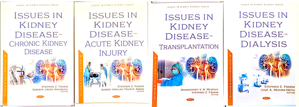
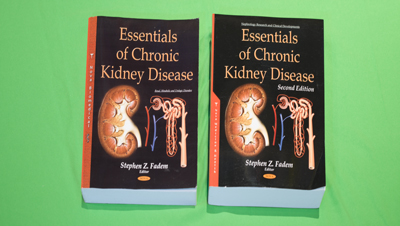

BOOKS
Aging and the Kidney
Mechanisms, Consequences, and Management Strategies
Editors: Stephen Fadem, Ahmed Arslan Yousuf Awan, Emaad Abdel-Rahman
Aging and the Kidney explores the connection between kidney health and overall well-being as age and longevity increase. The first part examines histological, structural, physiological, and functional changes that contribute to age-related declines in kidney function. It also discusses the role of nutrition and proteomics. The second part examines the functional decline in elderly patients and includes subparts on impaired quality of life, sleep quality, fall risk, frailty, depression, and sarcopenia. It also considers unique features of hypertension, diabetes, glomerulonephritis, and peripheral vascular disease.
The final part focuses on diagnostic, management, and prevention strategies. It addresses common myths about chronic kidney disease in the elderly, with particular attention to how a solitary kidney in living donors ages over time. The article also explains kidney function and its relationship to neurologic complications, cancers, and cardiovascular disease, along with current treatment approaches, medications, and future directions in caring for elderly patients.
Staying Healthy with Kidney Disease
Information and guidance on how to stay healthy with CKD. The book not only discusses diseae basics, but outlines changes a patient can make to have a better outcome.
Understanding and Preventing Falls
This book outlines several practical tips for eliminating potential home hazards and reviews each of the major causes of falls to help the patient and his or her caregiver, as well as the health provider, prevent falling by adapting one's lifestyle. The book also covers exercise programs and community programs that can be established and used to minimize the risk of falling in the elderly. Given that falls are common and that the majority of persons who fall are ill-prepared, this book will raise awareness of fall-prevention measures that can help reduce falls and fall-related injuries.
Complications in Dialysis
The book surveys common complications in the procedure of dialysis, including those due to inherent complexities related to advanced kidney disease and the disorders that cause it. Written by experienced dialysis experts, this book is a resource and learning tool for anyone involved in caring for patients undergoing renal replacement therapy.
Issues in Kidney Disease
The Issues series is a four volume set of books covering a wide range of renal topics. It is writen by renowned authors. This book will appeal to trainees and practicing clinicians in internal and family medicine, as well as nephrology, who would like current and practical clinical knowledge of chronic kidney disease to help improve the lives of patients with this condition.

Nova
ESSENTIALS IN CHRONIC KIDNEY DISEASE
Kidney disease touches nearly 14% of the population. Of the 661,000 Americans at the end stage of chronic kidney disease, 468,000 require dialysis and 193,000 have an effective kidney transplant. However, Medicare payments for dialysis alone are 34 billion dollars a year; it is among their foremost expenditures. ( USRDS). As both a life-saving procedure and a costly enterprise, the management of kidney disease commands the attention of care givers, providers and patients. Within this context, the intent of this book is to anticipate what the practicing nephrologist or internist needs to know when approaching, diagnosing and managing a patient with kidney disease.
NovaISSUES IN DIALYSIS
In 1989, the nephrology community was confronted with the combination of high tech and high flux, realizing for the first time that short, but mathematically 'adequate' therapy resulted in unacceptable outcomes. This book discusses issues that doctors must pay close attention to the nuances that make up care. This book is a highly comprehensive review of the several topics in nephrology that present daily challenges to the delivery of dialysis care.
Nova